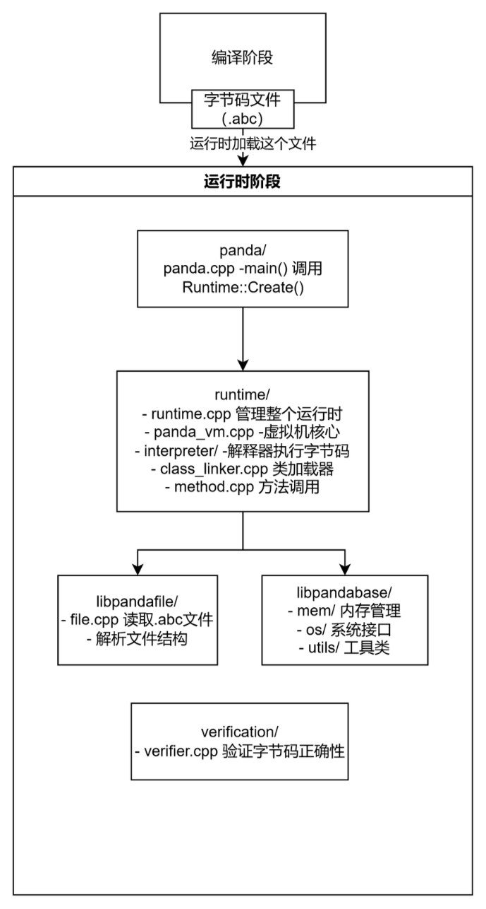

源码阅读 ARK-Runtime
NJU 2025Fall源码阅读笔记
对应项目：OpenHarmony/ark_runtime_core
panda：CLI工具，用于执行方舟字节码文件（*.abc）文件
程序入口 文件路径：panda/panda.cpp 从这里开始执行。
1 2 3 4 int main (int argc, const char **argv) return panda::Main (argc, argv); }
负责解析命令行参数 文件路径：panda/panda.cpp
函数：panda::Main()
主要工作：
解析命令行参数，如字节码文件路径、入口点方法名等
初始化日志
准备运行时选项
1 2 3 4 5 6 7 8 9 10 11 12 13 14 15 16 17 18 19 20 21 22 23 24 25 26 27 28 29 30 31 32 33 34 35 36 37 38 39 40 41 42 43 44 45 46 47 48 49 50 51 52 53 54 55 56 57 58 59 60 61 62 63 64 65 66 67 68 69 70 71 72 73 74 75 76 int Main (const int argc, const char **argv) auto start_time = std::chrono::duration_cast <std::chrono::nanoseconds>(std::chrono::system_clock::now ().time_since_epoch ()) .count (); BlockSignals (); Span<const char *> sp (argv, argc) ; RuntimeOptions runtime_options (sp[0 ]) ; base_options::Options base_options (sp[0 ]) ; panda::PandArg<bool > help ("help" , false , "Print this message and exit" ) ; panda::PandArg<bool > options ("options" , false , "Print compiler and runtime options" ) ; panda::PandArg<std::string> file ("file" , "" , "path to pandafile" ) ; panda::PandArg<std::string> entrypoint ("entrypoint" , "" , "full name of entrypoint function or method" ) ; panda::PandArgParser pa_parser; runtime_options.AddOptions (&pa_parser); base_options.AddOptions (&pa_parser); pa_parser.Add (&help); pa_parser.Add (&options); pa_parser.PushBackTail (&file); pa_parser.PushBackTail (&entrypoint); pa_parser.EnableTail (); pa_parser.EnableRemainder (); if (!pa_parser.Parse (argc, argv) || file.GetValue ().empty () || entrypoint.GetValue ().empty () || help.GetValue ()) { std::cerr << pa_parser.GetErrorString () << std::endl; std::cerr << "Usage: " << "panda" << " [OPTIONS] [file] [entrypoint] -- [arguments]" << std::endl; std::cerr << std::endl; std::cerr << "optional arguments:" << std::endl; std::cerr << pa_parser.GetHelpString () << std::endl; return 1 ; } Logger::Initialize (base_options); arg_list_t arguments = pa_parser.GetRemainder (); if (runtime_options.IsStartupTime ()) { std::cout << "\n" << "Startup start time: " << start_time << std::endl; } auto runtime_options_err = runtime_options.Validate (); if (runtime_options_err) { std::cerr << "Error: " << runtime_options_err.value ().GetMessage () << std::endl; return 1 ; } auto boot_panda_files = runtime_options.GetBootPandaFiles (); if (runtime_options.GetPandaFiles ().empty ()) { boot_panda_files.push_back (file.GetValue ()); } else { auto panda_files = runtime_options.GetPandaFiles (); auto found_iter = std::find_if (panda_files.begin (), panda_files.end (), [&](auto &file_name) { return file_name == file.GetValue (); }); if (found_iter == panda_files.end ()) { panda_files.push_back (file.GetValue ()); runtime_options.SetPandaFiles (panda_files); } } runtime_options.SetBootPandaFiles (boot_panda_files); if (!Runtime::Create (runtime_options)) { std::cerr << "Error: cannot create runtime" << std::endl; return -1 ; }
创建运行时实例 文件路径：runtime/runtime.cpp
函数：Runtime::Create()
主要工作：
初始化内存管理器
创建 Runtime 单例
调用 Initialize() 完成初始化
1 2 3 4 5 6 7 8 9 10 11 12 13 14 15 16 17 18 19 20 21 22 23 24 25 26 27 28 29 30 31 32 33 34 35 36 37 38 39 40 41 42 bool Runtime::Create (const RuntimeOptions &options, const std::vector<LanguageContextBase *> &ctxs) if (instance != nullptr ) { return false ; } trace::ScopedTrace scoped_trace ("Runtime::Create" ) ; panda::mem::MemConfig::Initialize (options.GetHeapSizeLimit (), options.GetInternalMemorySizeLimit (), options.GetCompilerMemorySizeLimit (), options.GetCodeCacheSizeLimit ()); PoolManager::Initialize (); mem::InternalAllocatorPtr internal_allocator = RuntimeInternalAllocator::Create (options.UseMallocForInternalAllocations ()); BlockSignals (); CreateDfxController (options); CreateInstance (options, internal_allocator, ctxs); if (instance == nullptr ) { LOG (ERROR, RUNTIME) << "Failed to create runtime instance" ; return false ; } if (!instance->Initialize ()) { LOG (ERROR, RUNTIME) << "Failed to initialize runtime" ; delete instance; instance = nullptr ; return false ; } instance->GetPandaVM ()->StartGC (); auto *thread = ManagedThread::GetCurrent (); instance->GetNotificationManager ()->VmStartEvent (); instance->GetNotificationManager ()->VmInitializationEvent (thread->GetId ()); instance->GetNotificationManager ()->ThreadStartEvent (thread->GetId ()); return true ;
初始化运行时 文件路径：runtime/runtime.cpp
函数：Runtime::Initialize()
主要工作：
创建 PandaVM
初始化类链接器
加载启动字节码文件（如标准库）
1 2 3 4 5 6 7 8 9 10 11 12 13 14 15 16 17 18 19 20 21 22 23 24 25 26 27 28 29 30 31 32 33 34 35 36 37 38 39 40 bool Runtime::Initialize () trace::ScopedTrace scoped_trace ("Runtime::Initialize" ) ; if (!CheckOptionsConsistency ()) { return false ; } if (!LoadVerificationConfig ()) { return false ; } auto runtime_type = options_.GetRuntimeType (); if (!CreatePandaVM (runtime_type)) { return false ; } if (!InitializePandaVM ()) { return false ; } ManagedThread *thread = ManagedThread::GetCurrent (); class_linker_->InitializeRoots (thread); auto ext = GetClassLinker ()->GetExtension (GetLanguageContext (runtime_type)); if (ext != nullptr ) { thread->SetStringClassPtr (ext->GetClassRoot (ClassRoot::STRING)); } fingerPrint_ = ConvertToString (options_.GetFingerprint ()); SetPandaPath (); if (!panda_vm_->InitializeFinish ()) { LOG (ERROR, RUNTIME) << "Failed to finish panda vm initialization" ; return false ; } is_initialized_ = true ; return true ;
创建 PandaVM 并加载启动文件 文件路径：runtime/runtime.cpp
函数：Runtime::CreatePandaVM()
主要工作：
1 2 3 4 5 6 7 8 9 10 11 12 13 14 15 16 17 18 19 20 21 22 23 24 25 26 27 28 29 bool Runtime::CreatePandaVM (std::string_view runtime_type) if (!ManagedThread::Initialize ()) { LOG (ERROR, RUNTIME) << "Failed to initialize managed thread" ; return false ; } panda_vm_ = PandaVM::Create (this , options_, runtime_type); if (panda_vm_ == nullptr ) { LOG (ERROR, RUNTIME) << "Failed to create panda vm" ; return false ; } panda_file::File::OpenMode open_mode = panda_file::File::READ_ONLY; if (Runtime::GetOptions ().GetRuntimeType () == "ecmascript" ) { open_mode = panda_file::File::READ_WRITE; } bool load_boot_panda_files_is_failed = options_.ShouldLoadBootPandaFiles () && !LoadBootPandaFiles (open_mode); if (load_boot_panda_files_is_failed) { LOG (ERROR, RUNTIME) << "Failed to load boot panda files" ; return false ; } notification_manager_->SetRendezvous (panda_vm_->GetRendezvous ());
若启用验证，加载字节码文件流程
文件路径：panda/panda.cpp （返回Main）
主要工作：
1 2 3 4 5 6 7 8 9 10 if (verif_opts.Enable) { runtime.GetClassLinker ()-> EnumerateBootPandaFiles ([](const panda_file::File &pf) { verifier::JobQueue::GetCache ().FastAPI ().ProcessFile (&pf); return true ; }); bool result = VerifierProcessFile (verif_opts, file_name, entry); if (!result && !verif_opts.Mode.VerifierDoesNotFail) { ret = -1 ;
执行字节码文件 文件路径：panda/panda.cpp
函数：panda::Main() → Runtime::ExecutePandaFile()
调用 Runtime::ExecutePandaFile() 执行。
1 2 3 4 5 6 7 8 9 } if (ret == 0 && (!verif_opts.Enable || !verif_opts.Mode.OnlyVerify)) { auto res = runtime.ExecutePandaFile (file_name, entry, arguments); if (!res) { std::cerr << "Cannot execute panda file '" << file_name << "' with entry '" << entry << "'" << std::endl; ret = -1 ; } else { ret = res.Value ();
加载应用字节码文件 文件路径：runtime/runtime.cpp
函数：Runtime::ExecutePandaFile()
主要工作：
为应用字节码创建独立的类链接上下文
调用 Execute() 执行入口点
1 2 3 4 5 6 7 8 9 10 11 12 13 14 15 16 17 18 19 20 21 22 } Expected<int , Runtime::Error> Runtime::ExecutePandaFile (std::string_view filename, std::string_view entry_point, const std::vector<std::string> &args) if (options_.IsDistributedProfiling ()) { std::string_view app_name = [](std::string_view path) -> std::string_view { auto pos = path.find_last_of ('/' ); return path.substr ((pos == std::string_view::npos) ? 0 : (pos + 1 )); }(filename); StartDProfiler (app_name); } auto ctx_err = CreateApplicationClassLinkerContext (filename, entry_point); if (ctx_err) { return Unexpected (ctx_err.value ()); } return Execute (entry_point, args); }
加载 .abc 文件到内存 文件路径：runtime/file_manager.cpp
函数：FileManager::LoadAbcFile()
主要工作：
从磁盘读取 .abc 文件
解析文件结构（类、方法、字节码等）
添加到类链接器，供后续使用
相关文件：
1 2 3 4 5 6 7 8 9 10 11 12 13 14 15 16 17 18 19 20 21 22 23 bool FileManager::LoadAbcFile (const PandaString &location, panda_file::File::OpenMode open_mode) auto pf = panda_file::OpenPandaFile (location, "" , open_mode); if (pf == nullptr ) { LOG (ERROR, PANDAFILE) << "Load panda file failed: " << location; return false ; } auto runtime = Runtime::GetCurrent (); runtime->GetClassLinker ()->AddPandaFile (std::move (pf)); if (Runtime::GetOptions ().IsEnableAn ()) { auto an_location = FileManager::ResolveAnFilePath (location); auto res = FileManager::LoadAnFile (an_location); if (res && res.Value ()) { LOG (INFO, PANDAFILE) << "Found .an file for '" << location << "': '" << an_location << "'" ; } else if (!res) { LOG (INFO, PANDAFILE) << "Failed to load AOT file: '" << an_location << "': " << res.Error (); } else { LOG (INFO, PANDAFILE) << "Failed to load '" << an_location << "' with unknown reason" ; } } return true ; }
解析入口点方法 文件路径：runtime/runtime.cpp
函数：Runtime::Execute() → Runtime::ResolveEntryPoint()
ResolveEntryPoint() 解析入口点：
解析类名和方法名（如 “MyClass::main”）
通过类链接器获取类：class_linker_->GetClass()
查找方法：cls->GetDirectMethod()
返回 Method* 对象
1 2 3 4 5 6 7 8 9 10 11 12 13 Expected<int , Runtime::Error> Runtime::Execute (std::string_view entry_point, const std::vector<std::string> &args) auto resolve_res = ResolveEntryPoint (entry_point); if (!resolve_res) { return Unexpected (resolve_res.Error ()); } NotifyAboutLoadedModules (); Method *method = resolve_res.Value (); return panda_vm_->InvokeEntrypoint (method, args); }
虚拟机调用入口点 文件路径：runtime/panda_vm.cpp
函数：PandaVM::InvokeEntrypoint()
主要工作：
1 2 3 4 5 6 7 8 9 10 11 12 13 14 15 16 17 18 Expected<int , Runtime::Error> PandaVM::InvokeEntrypoint (Method *entrypoint, const std::vector<std::string> &args) if (!CheckEntrypointSignature (entrypoint)) { LOG (ERROR, RUNTIME) << "Method '" << entrypoint << "' has invalid signature" ; return Unexpected (Runtime::Error::INVALID_ENTRY_POINT); } Expected<int , Runtime::Error> ret = InvokeEntrypointImpl (entrypoint, args); ManagedThread *thread = ManagedThread::GetCurrent (); if (thread->HasPendingException ()) { auto *exception = thread->GetException (); HandleUncaughtException (exception); ret = EXIT_FAILURE; } return ret; }
实际调用方法 文件路径：runtime/core/core_vm.cpp
函数：PandaCoreVM::InvokeEntrypointImpl()
主要工作：
初始化入口点所在的类
准备方法参数
调用 Method::Invoke()
1 2 3 4 5 6 7 8 9 10 11 12 13 14 15 16 17 18 19 20 21 22 23 24 25 26 27 28 29 30 Expected<int , Runtime::Error> PandaCoreVM::InvokeEntrypointImpl (Method *entrypoint, const std::vector<std::string> &args) Runtime *runtime = Runtime::GetCurrent (); MTManagedThread *thread = MTManagedThread::GetCurrent (); LanguageContext ctx = runtime->GetLanguageContext (*entrypoint); ASSERT (ctx.GetLanguage () == panda_file::SourceLang::PANDA_ASSEMBLY); ScopedManagedCodeThread sj (thread) ; ClassLinker *class_linker = runtime->GetClassLinker (); if (!class_linker->InitializeClass (thread, entrypoint->GetClass ())) { LOG (ERROR, RUNTIME) << "Cannot initialize class '" << entrypoint->GetClass ()->GetName () << "'" ; return Unexpected (Runtime::Error::CLASS_NOT_INITIALIZED); } ObjectHeader *object_header = nullptr ; if (entrypoint->GetNumArgs () == 1 ) { coretypes::Array *arg_array = CreateArgumentsArray (args, ctx, runtime_->GetClassLinker (), thread->GetVM ()); object_header = arg_array; } [[maybe_unused]] HandleScope<ObjectHeader *> scope (thread) ; VMHandle<ObjectHeader> args_handle (thread, object_header) ; Value arg_val (args_handle.GetPtr()) ; Value v = entrypoint->Invoke (thread, &arg_val); return v.GetAs <int >(); }
创建调用帧并进入解释器 文件路径：runtime/method.cpp
函数：Method::Invoke()
创建方法调用帧
设置参数到帧的寄存器
调用解释器入口
相关文件：
解释器执行字节码 文件路径：runtime/entrypoints/entrypoints.cpp
函数：InterpreterEntryPoint()
主要工作：
1 2 3 4 5 6 7 8 9 10 11 12 13 14 15 16 17 18 19 20 21 22 23 24 25 26 27 28 29 30 31 32 extern "C" NO_ADDRESS_SANITIZE void InterpreterEntryPoint (Method *method, Frame *frame) auto pc = method->GetInstructions (); Method *callee = frame->GetMethod (); ASSERT (callee != nullptr ); if (callee->IsAbstract ()) { ASSERT (pc == nullptr ); panda::ThrowAbstractMethodError (callee); HandlePendingException (); UNREACHABLE (); } ManagedThread *thread = ManagedThread::GetCurrent (); Frame *prev_frame = thread->GetCurrentFrame (); thread->SetCurrentFrame (frame); auto is_compiled_code = thread->IsCurrentFrameCompiled (); thread->SetCurrentFrameIsCompiled (false ); interpreter::Execute (thread, pc, frame); thread->SetCurrentFrameIsCompiled (is_compiled_code); if (prev_frame != nullptr && reinterpret_cast <uintptr_t >(prev_frame->GetMethod ()) == COMPILED_CODE_TO_INTERPRETER) { thread->SetCurrentFrame (prev_frame->GetPrevFrame ()); } else { thread->SetCurrentFrame (prev_frame); } }
解释器主循环执行 文件路径：runtime/interpreter/interpreter.cpp
函数：interpreter::Execute()
主要工作：
相关文件：
1 2 3 4 5 void Execute (ManagedThread *thread, const uint8_t *pc, Frame *frame, bool jump_to_eh) ExecuteImpl (thread, pc, frame, jump_to_eh); RESTORE_GLOBAL_REGS (); }
清理和退出 文件路径：panda/panda.cpp
函数：panda::Main()
主要工作：
1 2 3 4 if (!Runtime::Destroy ()) { std::cerr << "Error: cannot destroy runtime" << std::endl; return -1 ; }
结构图
